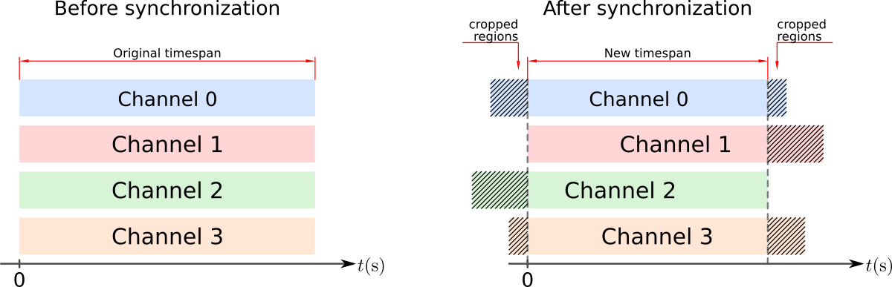

Welcome to CAAos Platform’s documentation!¶
{kind=link}
CAAos is an unified open source, cross-platform toolbox written in Python3 for processing and analysing cerebral autoregulation datasets from diverse clinical protocols and acquisition modalities. This is a new free software research tool that combines existing and novel methods for interactive visual inspection, batch processing and analysis of multichannel records. As open-source software, the source code is freely available for non-commercial use, reducing barriers to performing CA analysis, allowing inspection of the inner-workings of the algorithms and facilitating networked activities with common standards.
Installation and requirements¶
Warning
Installation instructions here
Preprocessing Operations (.PPO) file format¶
Warning
PPO file format here
All the operations applied are stored in operationsXML, a xml.etree.ElementTree instance. This function saves all operations stored to a text file. This allows for re-run the analysis on the same file, or apply the same set of operations to different cases.
Module definitions¶
In this section all modules will be described
patientData¶
Warning
Include here brief description of this module
- class patientData.patientData(inputFile, activeModule)[source]¶
Bases:
objectPatient data base class
This is the base class to process cerebral autoregulation data.
- inputFilestr
File with patient’s data. Accepted files: .EXP, .DAT (Raw Data file) or .PPO (preprocessing operation file)
- static getVersion()[source]¶
Return the current version of the module
Example
>>> from patientData import patientData as pD >>> myCase=pD('data.EXP') '0.1'
- createNewOperation()[source]¶
creates new operations Nodes. Before that cleans up any empty operators Element in the Tree.
- loadEXPDATHeader()[source]¶
Load header data from raw data files .exp, .dat.
This function is usually used in the begining to extract general information from the file. This function is automatically called from
loadData()Header format
The expected header format is:
Patient Name: XXXXX \ H birthday:DD:MM:YYYY | E Examination:DD:M:YYYY HH:MM:SS | A Sampling Rate: XXXHz | D Time Sample <CH_0_label> <CH_1_label> ... <CH_N_label> | E <- Labels: (columns separated by tabs) HH:mm:ss:ms N <CH_0_unit> <CH_1_unit> ... <CH_N_unit> / R <- Units: (columns separated by tabs) 00:00:00:00 0 0 45 ... 14.8 <-- table of data starts here 00:00:00:10 1 0 46 ... 16.8 ...
This function extracts only the following fields from the header
Examination date
Sampling Rate
Number of channels
Channel info: label and unit
Notes
The examination date is stored as a
datetimeelement in the attributeexamDate.The number of channels is stored in the attribute
nChannels.The sampling rate is stored in the attribute
samplingRate_Hz. The value of this attribute is sent to instances ofsignalafter callingloadData()and this attribute is removed after thatChannel labels and units are stored in the attribute
signalLabelsandsignalUnits. The values of these attributes are sent to instances ofsignalafter callingloadData()and these attributes are removed after that
Example
>>> from patientData import patientData as pD >>> myCase=pD('data.EXP') >>> myCase.loadEXPDATHeader() >>> myCase.examDate datetime.datetime(2015, 12, 31, 12, 5, 30) # 31st Jan 2015 - 12:05:30 >>> myCase.samplingRate_Hz 100.0 >>> myCase.nChannels 4 >>> myCase.signalLabels ['Time', 'Sample', 'MCA_L_To_Probe_Env', 'MCA_R_To_Probe_Env', 'Analog_1', 'Analog_8'] >>> myCase.signalUnits ['HH:mm:ss:ms', 'N', 'cm/s', 'cm/s', 'mV', 'mV']
- loadEXPDATfile()[source]¶
Loads patient data from raw data files .EXP, .DAT.
This function is used to load data files into memory. This function calls
loadHeader()internally, so you don’t have to call it manually.Notes
Each channel information is stored in one instance of
signal. They are accessible viasignalsIn the end of this function, the attributes
samplingRate_Hz,signalLabelsandsignalUnitsare removed. This information is passed to the instances ofsignal
Example
>>> from patientData import patientData as pD >>> myCase=pD('data.EXP') >>> myCase.loadEXPDAT() >>> myCase.signals[0] <signals.signal instance at 0x7f8744e6e710> >>> s.signals[0].info() # shows information of channel 0 ------------------------------- Channel: 0 label: MCA_L_To_Probe_Env unit: cm/s sigType: None nPoints: 30676 ------------------------------- >>> myCase.signals[1].info() # shows information of channel 1 ------------------------------- Channel: 1 label: MCA_R_To_Probe_Env unit: cm/s sigType: None nPoints: 30676 -------------------------------
- saveSIG(filePath, channelList=None, format='csv', register=True)[source]¶
Save data to a text file.
This function is usually used to save processed signals
- filePathstring
Full path to the file. Extension is not needed since a .SIG will be automatically added to the end of the filename. If path has an extension, this function will replace the extension by .SIG
- channelListlist of integers, optional
List of channels to save. If None (default) then all channels are saved in the file.
- formatstring, optional
File format. Avaiable values: ‘csv’, ‘numpy’, ‘simple_text’
Notes
This function calls
saveData()from each instance ofsignalin the list of channels.See
saveData()for details about the output file format.
Example
>>> from patientData import patientData as pD >>> myCase=pD('data.EXP') >>> myCase.loadData() >>> for i in range(x.nChannels): >>> x.signals[i].resample(100,method='quadratic') # resamples all channels at 100Hz, using quadratic interpolation >>> myCase.signals[2].calibrate(80,120,method='percentile') # calibrates channel 2 (presure) between 80 and 120mmHg, using percentile method >>> >>> myCase.saveSignals(fileName='/full/path/output1.SIG',channelList=None) # saves all channels in output1.SIG >>> myCase.saveSignals(fileName='/full/path/output2.SIG',channelList=[0,2]) # saves only channels 0 and 2 in output2.SIG
- saveB2B(filePath, channelList=None, format='csv', register=True)[source]¶
Save beat-to-beat data to a text file.
- filePathstring
Full path to the file. Extension is not needed since a .B2B will be automatically added to the end of the filename. If path has an extension, this function will replace the extension by .B2B
- channelListlist of integers, optional
List of channels to save. If None (default) then all channels are saved in the file.
- formatstring, optional
File format. Avaiable values: ‘csv’, ‘numpy’, ‘simple_text’
Notes
This function will save beat-to-beat data only if Beat-to-beat analysis was performed before. See
getBeat2beat().This function calls
saveB2B()from each instance ofsignalin the list of channels.See
saveB2B()for details about the output file format.
Example
>>> from patientData import patientData as pD >>> myCase=pD('data.EXP') >>> myCase.loadData() >>> myCase.findRRmarks(refChannel=2,method='ampd') # find RR marks with channel 2 as reference and ampd method >>> myCase.getBeat2beat(resampleRate_Hz=5.0,resampleMethod='cubic') # extract beat-to beat data and resample at 5Hz >>> >>> myCase.saveBeat2beat(fileName='/full/path/output1.B2B',channelList=None) # saves all channels in output1.SIG
- saveJob(fileName, mergeImported=False)[source]¶
Save the history of operations applied to the file.
This functions saves all operations applied to the data, in the correct order. This allows for re-run the analysis on the same file or apply the same set of operations to different cases.
- fileNamestring
Full path to the file. If the path has an extension, this function will replace the extension by the corresponding default extension, based on :arg:`section` argument
file extension. As default: - .PPO: (Preprocessing operations) - .ARO: (Autoregulation operations)
- mergeImported: bool, optional
If True, any imported opereations will be merged into de job file. Otherwise only the link to the operation file will be kept. (Default: False)
- section: strings
Describes the section of the operations to save. Use oe of the following: ‘preprocessing’, ‘ARanalysis’
PPO/ARO file formats
See ppo_aro_file_format_label for details about .PPO and .ARO file formats.
Example
>>> from patientData import patientData as pD >>> myCase=pD('data.EXP') >>> myCase.loadData() >>> for i in range(x.nChannels): >>> x.signals[i].resample(100,method='quadratic') # resamples all channels at 100Hz, using quadratic interpolation >>> myCase.signals[2].calibrate(80,120,method='percentile') # calibrates channel 2 (presure) between 80 and 120mmHg, using percentile method >>> myCase.findRRmarks(refChannel=2,method='ampd') # find RR marks with channel 2 as reference and ampd method >>> myCase.getBeat2beat(resampleRate_Hz=5.0,resampleMethod='cubic') # extract beat-to beat data and resample at 5Hz >>> >>> myCase.saveOperations(fileName='/full/path/output1.PPO')
The resulting .PPO of this example is:
<?xml version="1.0" ?> <patient examDate="2016-06-30 13:07:47" file="data.EXP" nChannels="4" sizeHeader="6" version="0.1"> <resample> <sampleRate unit="Hz">100</sampleRate> <method>quadratic</method> <channel>0</channel> </resample> <resample> <sampleRate unit="Hz">100</sampleRate> <method>quadratic</method> <channel>1</channel> </resample> <resample> <sampleRate unit="Hz">100</sampleRate> <method>quadratic</method> <channel>2</channel> </resample> <resample> <sampleRate unit="Hz">100</sampleRate> <method>quadratic</method> <channel>3</channel> </resample> <findRRmarks> <refChannel>2</refChannel> <method>ampd</method> <findPeaks>True</findPeaks> <findValleys>False</findValleys> </findRRmarks> <beat2beat> <resampleMethod>cubic</resampleMethod> <resampleRate_Hz>5.0</resampleRate_Hz> </beat2beat> </patient>
- runPreprocessingOperations(operationsElem)[source]¶
Apply the operations previously loaded.
Note
This function os automatically called during the initialization
__init__()if the input is a .PPO file.
- runARanalysisOperations(operationsElem)[source]¶
Apply the operations previously loaded.
Note
This function os automatically called during the initialization
__init__()if the input is a .PPO file.
- findChannel(attribute, identifier)[source]¶
Get channel number given its identifier of an attribute
- attributestring {‘label’, ‘type’}
Attribute under consideration
- identifier: string
Identifier of the channel
- indexint or None.
Index of the channel or None in case of failure.
Example
>>> from patientData import patientData as pD >>> myCase=pD('data.EXP') >>> myCase.loadData() >>> print(myCase.listChannels('label')) ['MCA_L_To_Probe_Env', 'MCA_R_To_Probe_Env', 'Analog_1', 'Analog_8'] >>> print(myCase.findChannel('label','Analog_1')) 2 >>> print(myCase.findChannel('label','Analog_2')) None
- listChannels(attribute)[source]¶
Return a list of values of the attribute from all channels
- attributestring {‘label’, ‘type’}
Attribute under consideration
- attrslist
list containing the values of the attributes
Example
>>> from patientData import patientData as pD >>> myCase=pD('data.EXP') >>> myCase.loadData() >>> print(myCase.listChannels('label')) ['MCA_L_To_Probe_Env', 'MCA_R_To_Probe_Env', 'Analog_1', 'Analog_8']
- findRRmarks(refChannel, method='ampd', findPeaks=True, findValleys=False, register=True)[source]¶
Find RR mark locations, given a reference signal.
This function detect RR intervals, given a channel used as reference. The marks are detected by looking for its local maxima and/or minima. RR marks locations, in samples, are stored in
peakIdxand/or valleyIdx respectively.- refChannelint
Channel number of the signal used as reference
- methodstring {‘ampd’, ‘md’}
peak detection algorithm. Default: ‘ampd’ * AMPD: Automatic Multiscale Peak Detection (AMPD) by Felix Scholkmann et al., 2012 <https://github.com/LucaCerina/ampdLib> * MD: Based on Marco Duarte’s implementation <https://github.com/demotu/BMC/blob/master/notebooks/DetectPeaks.ipynb>
- findPeaksbool, optional
Detect local maxima of the signal. Default: True
- findValleysbool, optional
Detect local minima of the signal. Default: False
- registerbool, optional
include this operation in the list of preprocessing operations. If False then the operation will not be stored.
Notes
This function calls
findPeaks()from each instance ofsignalin the list of channels.
Example
>>> from patientData import patientData as pD >>> myCase=pD('data.EXP') >>> myCase.loadData() >>> myCase.findRRmarks(refChannel=0,method='ampd',findPeaks=True,findValleys=False,register=False) # find local maxima using channel 0 as reference. Does not register the operation >>> myCase.removeRRmarks() # remove RRmark information >>> myCase.findRRmarks(refChannel=2,method='ampd',findPeaks=True,findValleys=True,register=True) # find local maxima and minima using channel 2 as reference. Register the operation
- insertPeak(newIdx, isPeak=True, register=True)[source]¶
Insert extra peak/valley mark
This function is used to insert a new RR mark to the list of peaks/valleys
- newIdxint
indice of the new peak/valley
- isPeakbool, optional
Register the new index as a peak if True (default) or valley if False.
- registerbool, optional
include this operation in the list of preprocessing operations. If False then the operation will not be stored.
Notes
If a peak is already registered at the given newIdx, no peak is added and the function ends without any error or warning messages.
Example
>>> from patientData import patientData as pD >>> myCase=pD('data.EXP') >>> myCase.loadData() >>> myCase.findRRmarks(refChannel=2,method='ampd',findPeaks=True,findValleys=True,register=True) >>> myCase.insertPeak(1200,isPeak=True,register=True) # add a peak at 1200
- removePeak(Idx, isPeak=True, register=True)[source]¶
Remove a peak/valley mark
This function is used to remove RR marks from the list of peaks/valleys
- Idxint
indice of the peak/valley to be removed
- isPeakbool, optional
Removes a peak if True (default) or valley if False.
- registerbool, optional
include this operation in the list of preprocessing operations. If False then the operation will not be stored.
Note * If a peak is not registered at the given Idx, no peak is removed and the function ends without any error or warning messages.
Example
>>> from patientData import patientData as pD >>> myCase=pD('data.EXP') >>> myCase.loadData() >>> myCase.findRRmarks(refChannel=2,method='ampd',findPeaks=True,findValleys=True,register=True) >>> myCase.insertPeak(1200,isPeak=True,register=True) # add a peak at 1200 >>> myCase.removePeak(1200,isPeak=True,register=True) # remove the peak at 1200
- removeRRmarks()[source]¶
cleanup RR interval information
Example
>>> from patientData import patientData as pD >>> myCase=pD('data.EXP') >>> myCase.loadData() >>> myCase.findRRmarks(refChannel=0,method='ampd',findPeaks=True,findValleys=False,register=False) >>> myCase.removeRRmarks() # remove RRmark information
- synchronizeSignals(channelList, method='correlation', ABPdelay_s=0.0, register=True)[source]¶
Synchronize the channels
- channelListlist of integers
List of channels to synchronize. This argument is used only when method=’correlation’
- methodstring {‘correlation’, ‘fixedAPB’}
synchronization method. Default: ‘correlation’
fixedAPB: Based on Marco Duarte’s implementation <https://github.com/demotu/BMC/blob/master/notebooks/DetectPeaks.ipynb>
- ABPdelay_sfloat
Arterial blood pressure fxed delay in seconds. This argument is used only when method=’fixedAPB’.
- registerbool, optional
include this operation in the list of preprocessing operations. If False then the operation will not be stored.
Algorithms
Correlation: synchronization is based on the correlation between the channels. For each two channels, the delay is define by the index of the peak in correlation between the channels.
fixedABP: Only the arterial blood pressure (ABP) channel is delayed. The argument ABPdelay_s defines the delay, in seconds. This algorithms will look for the APB channel. See
setType().
After the synchronization, each channel might be cropped on one or both sides to comply with the new timespan, defined by the time interval in common across all channels. See figure below.
Example
>>> from patientData import patientData as pD >>> myCase=pD('data.EXP') >>> myCase.loadData() >>> myCase.synchronizeSignals(channelList=[0,1,2],method='correlation',ABPdelay_s=0.0,register=True) # synchronize channels 0, 1 and 2, using correlation method >>> myCase.signals[2].setType('ABP') >>> myCase.synchronizeSignals(channelList=None,method='fixedAPB',ABPdelay_s=0.2,register=True) # synchronize ABP channel, using the fixed delay method
- computePSDwelch(useB2B=True, overlap=0.5, segmentLength_s=100, windowType='hanning', detrend=False, filterType=None, nTapsFilter=3, register=True)[source]¶
{kind=link}